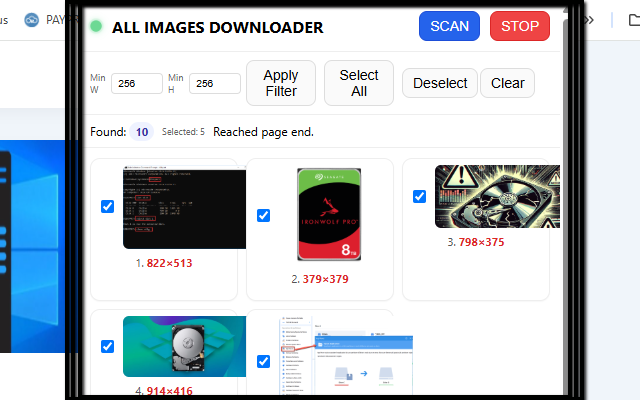
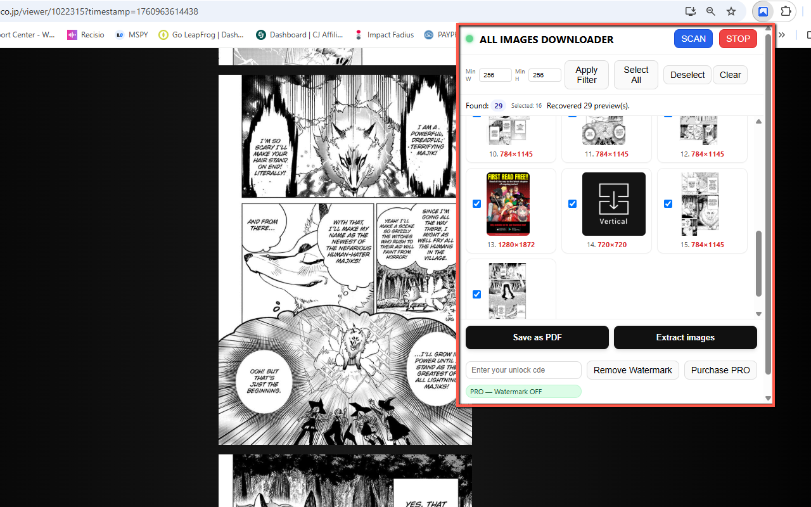

All Images Downloader
All Images Downloader scans any webpage and grabs every image it can find — including tricky blob: and data: sources and classic <img src="http/https">. You get a live gallery with size filters, quick selection, and two export modes: Save as PDF or Extract images to your Downloads. It also persists previews between sessions and stores originals in IndexedDB so your exports stay high‑quality even after reopening the popup.
This is especially handy on modern sites with infinite scrolling, lazy‑loaded images, canvas rendering, or custom attributes (e.g. data-url). Bonus: it works great on online comic/manga readers — you can scan a chapter and export a clean, single PDF for comfy offline reading. 📚✨
🚀 Quick Start
- Install from the Chrome Web Store (replace with your Web Store URL)
- Pin the icon next to the address bar.
- Open the popup and click SCAN — it auto‑scrolls to reveal lazy images and fills the gallery in real time.
- Use Min W / Min H to skip tiny thumbnails, and select what you need.
- Export: Save as PDF (one image per page, built in‑memory) or Extract images (saved to Downloads).
📷 Screenshots


✅ Features
- Blob & data support + standard
<img src>(jpeg, png, webp, etc.). - Auto‑scroll scanner with live previews; catches lazy‑loaded and dynamically injected images.
- Size filters (Min Width/Height) to skip small thumbnails.
- Select All / Deselect + per‑image checkboxes.
- Save as PDF (built directly, no print dialog) or Extract images to Downloads.
- Persistence: previews survive popup close; originals cached in IndexedDB for full‑res exports later. c
- FREE vs PRO: FREE adds a red "Watermark DEMO"; PRO removes it.
- Manga/Comics friendly: scan chapters and export a neat, single PDF for offline reading.
🔒 Permissions (and why)
- activeTab — access the current page when you click SCAN.
- scripting — inject the lightweight scanner content script.
- downloads — save images and PDFs to your device.
- storage — remember settings, license status, and lightweight previews.
- Host permissions (
<all_urls>) — allow reading images where CORS permits for watermark/PDF.
❓ FAQ
Will it work on manga/comic readers?
Yes. It’s designed for modern sites: blob/data images, data-url attributes, canvas rendering, and infinite scroll. Scan a chapter and save as a single PDF for comfy offline reading.
Why are some images missing in the PDF?
Some sites block pixel access via CORS. In those cases the extension can still download the original URL (especially in PRO), but may skip embedding those images in the PDF or applying a watermark.
Is my data tracked?
No accounts, no tracking. Everything runs locally in your browser. Settings are stored on your device.